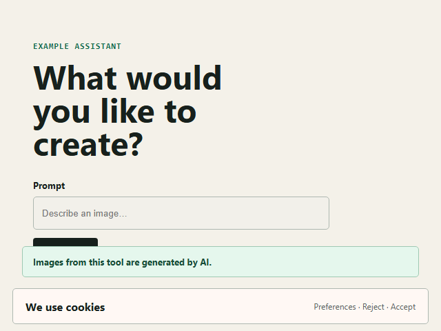

Browser obstruction fixed fixture
audit run · 2026-07-24T19-25-22-721Z-c42fd98d
1/1surfaces passed
1/1checks passed
0/0provenance passed
0failures
224 msduration
Result boundary: PASS means only that the configured technical condition was observed at the recorded time. It is not a legal compliance conclusion or certification.
Started 2026-07-24T19:25:22.721Z · Generated by art50-ci 0.3.0
Configuration SHA-256: 2591a65c24cb866fc3c7bea2b89468f98ebdaf5d6238a37b2e79a362b5969dc9 · Node v24.15.0 · win32/x64
AI generation notice above the cookie overlay
disclosure-obstruction-demo · website- Target
$CONFIG_DIR/fixed.html- Final URL
$CONFIG_DIR/fixed.html- HTTP
- 200
- Viewport
- 640 × 480
- Page hash
8afb46155c3bbdc5c0cb4c24a852024aca5418bd95c16be0eb533a9d3f365582- Screenshot hash
4f78a805e198d34307c2e9fba28bcaa877f7d346453caa9fe718924a60990a54- Duration
- 125 ms
No first-interaction checkpoint was declared; disclosure observations were captured in the initial page state.
Open screenshot
Disclosure checks
| Status | ID | Selector | Expected | Actual | Viewport | Unobstructed | Accessible | Time |
|---|---|---|---|---|---|---|---|---|
| PASS | ai-generation-notice |
[data-ai-disclosure] |
contains “generated by AI” | Images from this tool are generated by AI. | yes | yes | yes · AI generation notice | 28 ms |